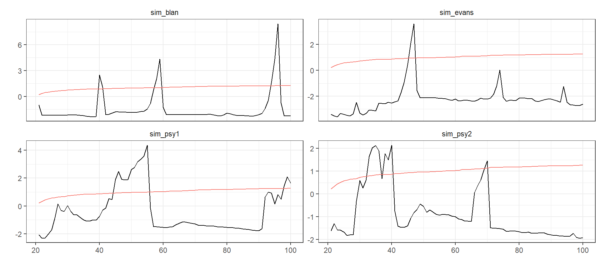

library(exuber)
options(exuber.show_progress = FALSE)
library(dplyr)
library(ggplot2)
library(tidyr)set.seed(123)
dta <- tibble(
sim_psy1 = sim_psy1(100),
sim_psy2 = sim_psy2(100),
sim_evans = sim_blan(100),
sim_blan = sim_evans(100),
)
# Esimation
tstats <- radf(dta, lag = 1)
# Critical Values ~ Conservative
cv <- mc_cv(nrow(dta), opt_bsadf = "conservative")Custom plotting
joined <- augment_join(tstats, cv)
joined
#> # A tibble: 1,920 x 6
#> index id name tstat sig crit
#> <dbl> <chr> <chr> <dbl> <fct> <dbl>
#> 1 21 sim_blan badf -0.974 0.9 0.0203
#> 2 21 sim_blan badf -0.974 0.95 0.0203
#> 3 21 sim_blan badf -0.974 0.99 0.0203
#> 4 22 sim_blan badf -2.20 0.9 0.0204
#> 5 22 sim_blan badf -2.20 0.95 0.0204
#> 6 22 sim_blan badf -2.20 0.99 0.0204
#> 7 23 sim_blan badf -2.18 0.9 0.0205
#> 8 23 sim_blan badf -2.18 0.95 0.0205
#> 9 23 sim_blan badf -2.18 0.99 0.0205
#> 10 24 sim_blan badf -2.25 0.9 0.0205
#> # ... with 1,910 more rowslibrary(ggplot2)
joined %>%
ggplot( aes(x = index)) +
geom_line(aes(y = tstat)) +
geom_line(aes(y = crit, col = "red")) +
facet_grid(id ~ name + sig , scales = "free_y") +
theme_bw()
fortify(tstats, cv) %>%
gather(id, tstat, -cv, -index) %>%
ggplot(aes(x = index)) +
geom_line(aes(y = tstat)) +
geom_line(aes(y = cv, col = "red", linetype = "dotted")) +
facet_wrap(~ id , scales = "free_y") +
theme_bw() + theme(strip.background = element_blank(),
legend.position = "none") +
labs(x = "", y = "")

Just for fun
library(tidyr)
dist %>%
tidy() %>%
rename_all(~ stringr::str_to_upper(.)) %>%
gather(Statistic, value, factor_key = TRUE) %>%
ggplot(aes(value, color = Statistic)) +
stat_ecdf() +
ggtitle("Empirical Cumulative Distribution Function") +
geom_hline(yintercept = 0.95, linetype = "dashed") + theme_bw()